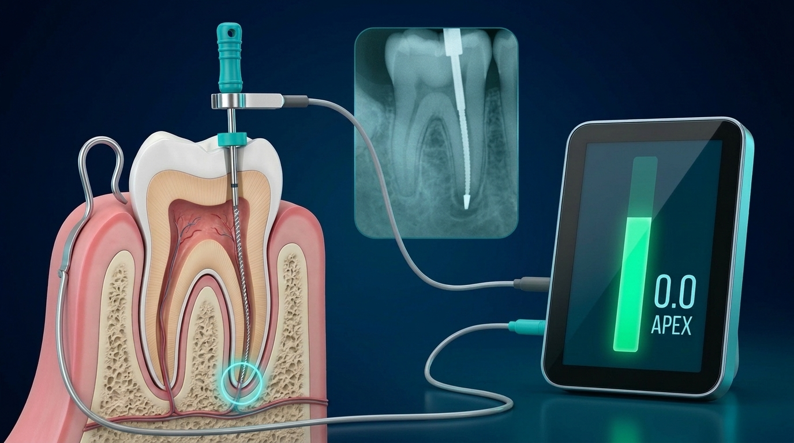

NT-09: Xác định chiều dài làm việc: Máy định vị chóp, X-quang và kiểm soát sai số

Trong điều trị nội nha, việc làm sạch và trám bít ống tủy cần dừng lại ở đúng một "điểm vàng" giải phẫu gần chóp chân răng: nơi thắt chóp (apical constriction) — ranh giới tự nhiên giữa mô tủy bên trong răng và mô dây chằng nha chu bên ngoài xương hàm. Nếu làm việc quá ngắn, phần vi khuẩn và mô hoại tử ở 1–2 mm cuối chóp sẽ bị bỏ sót gây viêm tái phát. Ngược lại, nếu đi quá chóp, dụng cụ và vật liệu sẽ đẩy vi khuẩn ra xương hàm gây đau nhức dữ dội sau điều trị. Vì vậy, xác định chiều dài làm việc (Working Length – WL) chính xác là bước sống còn của mọi ca nội nha.
1. Tại sao không thể chỉ dựa vào cảm giác tay hay phim X-quang đơn thuần?
- Giới hạn của cảm giác tay (Tactile sensation): Nhiều vùng chóp bị tiêu ngót do viêm mạn tính hoặc có ống tủy cong hẹp ở 1/3 giữa khiến trâm bị kẹt sớm, tạo cảm giác giả như đã chạm tới điểm thắt chóp.
- Giới hạn của phim X-quang 2D: Trên phim X-quang, bác sĩ chỉ nhìn thấy chóp giải phẫu (radiographic apex), trong khi lỗ chóp thực sự (major apical foramen) thường nằm lệch sang một bên cách chóp giải phẫu khoảng 0.5–1.5 mm (đặc biệt ở người lớn tuổi). Hơn nữa, góc chụp phim dễ gây kéo dài hoặc thu ngắn ảo ảnh chân răng.
2. Máy định vị chóp điện tử (Electronic Apex Locator – EAL): Tiêu chuẩn vàng hiện đại
Máy định vị chóp thế hệ mới (đa tần số) đo sự thay đổi trở kháng điện học giữa hai tần số dòng điện khi đầu trâm tiến từ ống ngà (cách điện) chạm vào dây chằng nha chu (dẫn điện). Nhờ cơ chế này, EAL xác định chính xác vị trí lỗ chóp / vùng thắt chóp bất kể ống tủy thẳng hay cong, và không bị ảnh hưởng bởi góc chụp phim.
Quy trình đo chuẩn xác và kiểm soát sai số EAL:
- Điểm tham chiếu cố định (Reference Point): Trước khi đo, phải mài phẳng hoặc chọn một điểm gờ múi/rìa cắn vững chắc, dễ nhìn trên thân răng để đặt nút chặn cao su (rubber stop). Tuyệt đối không lấy điểm tham chiếu trên thành sâu răng yếu dễ vỡ giữa chừng.
- Làm thông thoáng 1/3 cổ (Coronal pre-flaring): Mở rộng nhẹ phần cổ ống tủy và bơm rửa trước giúp trâm đi thẳng xuống chóp mà không bị cọ sát thành ngà làm sai lệch tín hiệu.
- Kiểm soát độ ẩm trong buồng tủy: Buồng tủy ngập tràn dịch NaOCl dẫn điện hoặc máu, hoặc chạm vào miếng trám kim loại/mão sứ kim loại sẽ gây đoản mạch (short-circuit) làm máy báo "tới chóp" giả. Cần thấm khô nhẹ buồng tủy bằng bông gòn vô khuẩn trong khi vẫn giữ ống tủy đủ ẩm nhẹ.
- Chọn kích thước trâm vừa khít vùng chóp: Dùng trâm tay (thường là K-file #10 hoặc #15) có đường kính tương xứng với độ rộng ống tủy ở vùng chóp; trâm quá lỏng trong ống tủy rộng sẽ cho kết quả dao động thiếu ổn định.
- Xác nhận lại chiều dài sau khi tạo hình 1/3 cổ – giữa: Ở các ống tủy cong, sau khi tạo hình phần thân ống tủy, đường đi của trâm trở nên thẳng hơn nên chiều dài làm việc thực tế thường ngắn đi 0.5–1 mm. Cần đo kiểm tra lại bằng EAL trước khi hoàn tất sửa soạn vùng chóp!
3. Phối hợp EAL và Phim X-quang kiểm tra
Sự kết hợp giữa Máy định vị chóp điện tử và Phim X-quang đo chiều dài (với trâm hoặc côn chính) là bộ đôi hoàn hảo: EAL định vị điểm sinh học chính xác ở vùng chóp, còn phim X-quang giúp kiểm tra trực quan hình thái cong của chân răng, phát hiện thủng thành hoặc ống tủy chập vào nhau, đảm bảo an toàn tuyệt đối trước khi trám bít.
Địa chỉ: Số 15 đường Võ Nguyên Giáp, phường Đức Xuân, tỉnh Thái Nguyên
Hotline & Zalo tư vấn trực tiếp: 0912 343 858 · Website: https://tcvuong6-wq.github.io/bsvuong-web/